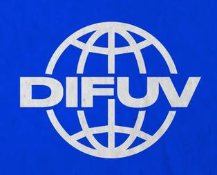
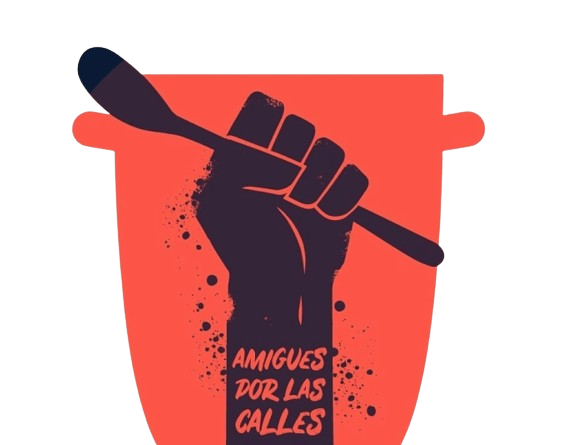

Sumate a una organización como voluntarie

Buscá la organización a tu medida
Voicot
Organización artística.
Website- 
Difusión V
Difunde Veganismo.
Website - 
Amigues por las calles
Organización de voluntaries que proveen comida vegana a la gente en situación de calle.
Website Difusión V
Difunde Veganismo.
WebsiteAmigues por las calles
Organización de voluntaries que proveen comida vegana a la gente en situación de calle.
WebsiteDifusión V
Difunde Veganismo.
WebsiteAmigues por las calles
Organización de voluntaries que proveen comida vegana a la gente en situación de calle.
Website

¿Quiénes Somos?
Sobre nosotres
Un grupo de gente apasionada con muchas ganas de ayudar. Creemos en la liberacion animal y en la justicia social. Nuestro objetivo es crear puentes entre personas con recursos y ganas de ayudar, con espacios que lo necesitan.
Buscá tu organización en el mapa
Loading...